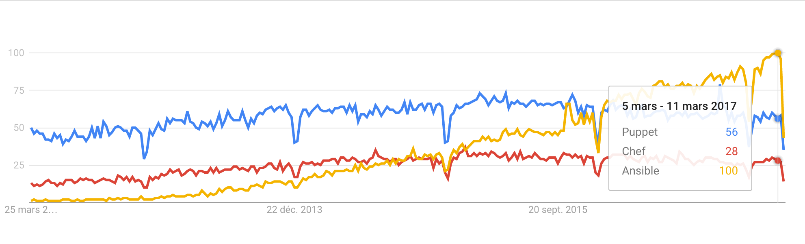
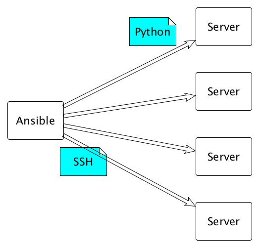
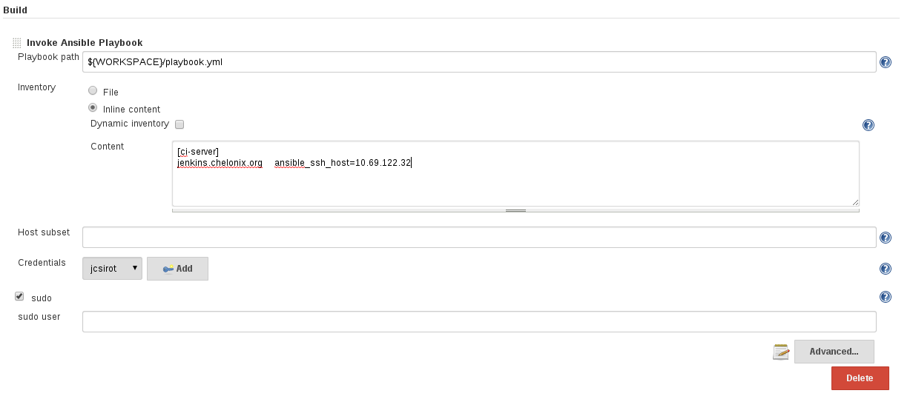
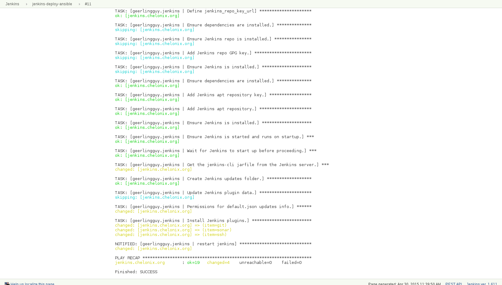

[front] # un groupe
front1 # les machines du groupes
front2
[middle]
middle[1-2] # pattern
[backend]
backend
[myenvironment:children] # un groupe de groupe
front
middle
backendAutomatiser avec Ansible
/Me
Antoine Méausoone
2 enfants
Ingénieur logiciel, Ex-(Atos) Worldline, Ex-Capgemini, Sfeir \o/
Dev, Ops … DevOps?
Problème
Comment gérer tous ces serveurs aujourd’hui ?
Comment ?
Accélérer les déploiements ?
Fiabiliser les environnements ?
Faciliter la gestion des serveurs ?
Automatiser les tâches récurrentes ?
Let’s code this !
Scripts shell ?
Pas "Idempotent"
Pas robuste
Maintenabilité ?
La Solution ?
Provisionning
Pourquoi Ansible ?
Pas d’agents, pas de master
Configuration en YAML
S’installe avec un simple package
Très simple à apprendre et à utiliser
Des centaines de modules (+ de 600 aujourd’hui)
Historique
Créé en 2012 par Michael DeHaan pour créer un outil simple par rapport aux concurrents Chef et Puppet
Racheté par RedHat en 2015
Trends

Comment ça marche ?

Installation
sudo pip install ansible
Commandes principales
ansible <host-pattern> [options]
ansible-playbook playbook.yml [options]
Commandes secondaires
ansible-galaxy [delete|import|info|init|install|list|login|remove|search|setup] [--help] [options]
ansible-vault [create|decrypt|edit|encrypt|rekey|view] [--help] [options] vaultfile.yml
Concepts
Inventory
Commandes ad-hoc et les modules
Playbooks
Roles
Inventory
Inventaire des machines gérer par Ansible
Emplacement :
Par défaut : /etc/ansible/host
Option "-i" : ansible -i hosts
Défini dans ansible.cfg
Inventaire dynamique : AWS, DigitalOcean, ou un script custom
Inventory | Exemples
Commandes Ad-hoc
Commandes Ad-hoc
Une simple ligne de commande
Pour exécuter une tâche | module
En parallèle
Ex : Redémarrer httpd sur mes serveurs web
Ex : Installer un package sur mes bdd
Module Ping
Vérifier la connexion sur les serveurs
On peut spécifier "all", un groupe ou un pattern de machines
s’exécute en parallèle
Commandes Ad-hoc | Module Ping
ansible all -m ping
backend | SUCCESS => {
"changed": false,
"ping": "pong"
}
front | SUCCESS => {
"changed": false,
"ping": "pong"
}
zabbixserver | SUCCESS => {
"changed": false,
"ping": "pong"
}Module Setup
Collecte des informations sur le système
Ip, nom, OS, montage, disques
Peut-être utilisé dans des conditions (playbook)
Commandes Ad-hoc | Module Setup
ansible front -m setup
front | SUCCESS => {
"ansible_facts": {
"ansible_all_ipv4_addresses": [
"172.21.0.4"
],
"ansible_all_ipv6_addresses": [
"fe80::42:acff:fe15:4"
],
"ansible_architecture": "x86_64",
"ansible_bios_date": "03/14/2014",
"ansible_bios_version": "1.00",
"ansible_date_time": {
"date": "2017-03-14",
"day": "14",
"epoch": "1489509846",
"hour": "16",
"iso8601": "2017-03-14T16:44:06Z",
"iso8601_basic": "20170314T164406313031",
"iso8601_basic_short": "20170314T164406",
"iso8601_micro": "2017-03-14T16:44:06.313111Z",
"minute": "44",
"month": "03",
"second": "06",
"time": "16:44:06",
"tz": "UTC",
"tz_offset": "+0000",
"weekday": "Tuesday",
"weekday_number": "2",
"weeknumber": "11",
"year": "2017"
},
"ansible_default_ipv4": {
"address": "172.21.0.4",
"alias": "eth0",
"broadcast": "global",
"gateway": "172.21.0.1",
"interface": "eth0",
"macaddress": "02:42:ac:15:00:04",
"mtu": 1500,
"netmask": "255.255.0.0",
"network": "172.21.0.0",
"type": "ether"
},
"ansible_distribution": "CentOS",
"ansible_distribution_major_version": "6",
"ansible_distribution_release": "Final",
"ansible_distribution_version": "6.8",
"ansible_dns": {
"nameservers": [
"127.0.0.11"
],
"options": {
"ndots": "0"
}
},
"ansible_domain": "",
"ansible_env": {
"G_BROKEN_FILENAMES": "1",
"HOME": "/root",
"LANG": "en_US.UTF-8",
"LESSOPEN": "||/usr/bin/lesspipe.sh %s",
"LOGNAME": "root",
"MAIL": "/var/mail/root",
"PATH": "/usr/local/sbin:/usr/local/bin:/sbin:/bin:/usr/sbin:/usr/bin",
"PWD": "/root",
"SHELL": "/bin/bash",
"SHLVL": "2",
"SSH_CLIENT": "172.21.0.5 37576 22",
"SSH_CONNECTION": "172.21.0.5 37576 172.21.0.4 22",
"SSH_TTY": "/dev/pts/0",
"TERM": "xterm",
"USER": "root",
"_": "/usr/bin/python"
},
"ansible_eth0": {
"active": true,
"device": "eth0",
"features": {
"busy_poll": "off [fixed]",
"fcoe_mtu": "off [fixed]",
"generic_receive_offload": "on",
"generic_segmentation_offload": "on",
"highdma": "on",
"hw_tc_offload": "off [fixed]",
"l2_fwd_offload": "off [fixed]",
"large_receive_offload": "off [fixed]",
"loopback": "off [fixed]",
"netns_local": "off [fixed]",
"ntuple_filters": "off [fixed]",
"receive_hashing": "off [fixed]",
"rx_all": "off [fixed]",
"rx_checksumming": "on",
"rx_fcs": "off [fixed]",
"rx_vlan_filter": "off [fixed]",
"rx_vlan_offload": "on",
"rx_vlan_stag_filter": "off [fixed]",
"rx_vlan_stag_hw_parse": "on",
"scatter_gather": "on",
"tcp_segmentation_offload": "on",
"tx_checksum_fcoe_crc": "off [fixed]",
"tx_checksum_ip_generic": "on",
"tx_checksum_ipv4": "off [fixed]",
"tx_checksum_ipv6": "off [fixed]",
"tx_checksum_sctp": "on",
"tx_checksumming": "on",
"tx_fcoe_segmentation": "off [fixed]",
"tx_gre_csum_segmentation": "on",
"tx_gre_segmentation": "on",
"tx_gso_partial": "off [fixed]",
"tx_gso_robust": "off [fixed]",
"tx_ipxip4_segmentation": "on",
"tx_ipxip6_segmentation": "on",
"tx_lockless": "on [fixed]",
"tx_nocache_copy": "off",
"tx_scatter_gather": "on",
"tx_scatter_gather_fraglist": "on",
"tx_sctp_segmentation": "on",
"tx_tcp6_segmentation": "on",
"tx_tcp_ecn_segmentation": "on",
"tx_tcp_mangleid_segmentation": "on",
"tx_tcp_segmentation": "on",
"tx_udp_tnl_csum_segmentation": "on",
"tx_udp_tnl_segmentation": "on",
"tx_vlan_offload": "on",
"tx_vlan_stag_hw_insert": "on",
"udp_fragmentation_offload": "on",
"vlan_challenged": "off [fixed]"
},
"ipv4": {
"address": "172.21.0.4",
"broadcast": "global",
"netmask": "255.255.0.0",
"network": "172.21.0.0"
},
"ipv6": [
{
"address": "fe80::42:acff:fe15:4",
"prefix": "64",
"scope": "link"
}
],
"macaddress": "02:42:ac:15:00:04",
"mtu": 1500,
"promisc": false,
"speed": 10000,
"type": "ether"
},
"ansible_fips": false,
"ansible_form_factor": "Unknown",
"ansible_fqdn": "4da41820e9a5",
"ansible_gather_subset": [
"hardware",
"network",
"virtual"
],
"ansible_hostname": "4da41820e9a5",
"ansible_interfaces": [
"gre0",
"ip6tnl0",
"lo",
"tunl0",
"ip6_vti0",
"gretap0",
"sit0",
"ip6gre0",
"ip_vti0",
"eth0"
],
"ansible_kernel": "4.9.12-moby",
"ansible_machine": "x86_64",
"ansible_memfree_mb": 290,
"ansible_memory_mb": {
"nocache": {
"free": 1293,
"used": 705
},
"real": {
"free": 290,
"total": 1998,
"used": 1708
},
"swap": {
"cached": 0,
"free": 3994,
"total": 3994,
"used": 0
}
},
"ansible_memtotal_mb": 1998,
"ansible_mounts": [
{
"device": "/dev/vda2",
"fstype": "ext4",
"mount": "/etc/resolv.conf",
"options": "rw,relatime,data=ordered,bind",
"size_available": 55290834944,
"size_total": 63381999616,
"uuid": "N/A"
},
{
"device": "/dev/vda2",
"fstype": "ext4",
"mount": "/etc/hostname",
"options": "rw,relatime,data=ordered,bind",
"size_available": 55290834944,
"size_total": 63381999616,
"uuid": "N/A"
},
{
"device": "/dev/vda2",
"fstype": "ext4",
"mount": "/etc/hosts",
"options": "rw,relatime,data=ordered,bind",
"size_available": 55290834944,
"size_total": 63381999616,
"uuid": "N/A"
}
],
"ansible_nodename": "4da41820e9a5",
"ansible_os_family": "RedHat",
"ansible_pkg_mgr": "yum",
"ansible_processor": [
"GenuineIntel",
"Intel(R) Core(TM) i7-4770HQ CPU @ 2.20GHz",
"GenuineIntel",
"Intel(R) Core(TM) i7-4770HQ CPU @ 2.20GHz",
"GenuineIntel",
"Intel(R) Core(TM) i7-4770HQ CPU @ 2.20GHz",
"GenuineIntel",
"Intel(R) Core(TM) i7-4770HQ CPU @ 2.20GHz"
],
"ansible_processor_cores": 1,
"ansible_processor_count": 4,
"ansible_processor_threads_per_core": 1,
"ansible_processor_vcpus": 4,
"ansible_product_name": "BHYVE",
"ansible_product_serial": "None",
"ansible_product_uuid": "1384B81A-C34C-E039-A3D0-76E55EDE16BC",
"ansible_product_version": "1.0",
"ansible_python": {
"executable": "/usr/bin/python",
"has_sslcontext": false,
"type": "CPython",
"version": {
"major": 2,
"micro": 6,
"minor": 6,
"releaselevel": "final",
"serial": 0
},
"version_info": [
2,
6,
6,
"final",
0
]
},
"ansible_python_version": "2.6.6",
"ansible_selinux": false,
"ansible_service_mgr": "sshd",
"ansible_ssh_host_key_dsa_public": "AAAAB3NzaC1kc3MAAACBALkgOtMWMj44kJdUkoTEdnHoscOjhcHfBOuAFgWZZKj42KRyVogp+EjR3wzN8BLuDNi80KjNqa7dxAuHenzAX39p/rdEBQXhcb03AnuErMtXvx/2+CGRUAerXPj5qy0e53B5sPfAKQX+rWZ16HqTfKRz6QAOgbf93eV7YMHy1WDPAAAAFQD6bC//7Dt2ZIsRybv7sQT2joHHlQAAAIEAhc04iHZyR3ZE0qcs4oVlDka0nrp0a74W3DEieGfXqlRZVGo+fWMgO6GE1bKEq+WFdS0XLJuLYtvbUuu/6MKUcOeNj88A9aD0uU9Mqbuo4mHCukcxDo4FsWCDfP6K0GnTNBm2LPX0qDA/LjffbAzEnoXXRWkW1NPuMUiz8s7uK+wAAACAdMZJJkyRxLsVEB4jmXKEcFOZ2b5UjiFUScolNPqbjWyYpB2EkGND+Bg7h0xhJruT5fDuOV28X+Pm3fCVWzPEank88T8/7TagUpF+WjGkWQ6EaE1R0n1PZ6m5tM0rlWXAAV9V7MwlXqQT508VBzyk08ZO7fkgXdD+nJ4wOT+ymY4=",
"ansible_ssh_host_key_rsa_public": "AAAAB3NzaC1yc2EAAAABIwAAAQEAvFCRM1GQ2VGhNfftReWaJ7tNOxiMNk0z/Uj8oIyFVbnr9aeFckoY4JogxMYqMZUivbuQo+Dh1AhE/x4ZOGqKr0pZILARQyEgEpd0IEdQ4fDKN93ZsCUFE6DmYymEm+CjQ5y7S3wz04A/nwcyjEMvjL9wt5sVMxZaxIXyvlDsl1opM8YvZhv2S6AZJ5ck+5am8AIYAyyvnwbbPpAH6ClXwycZJW3hMwOVzfWz/4HyK4lsRItRkiCNoSbls+LiOWpZ44/R4vEcG1l6dtekaWllqlzF7JFgKauFScU7TiyGIH9o/13Lj5H00IazAwnNkbYkqRJkqBGwPSsqx6klK1n2Yw==",
"ansible_swapfree_mb": 3994,
"ansible_swaptotal_mb": 3994,
"ansible_system": "Linux",
"ansible_system_capabilities_enforced": "True",
"ansible_system_vendor": "NA",
"ansible_uptime_seconds": 217034,
"ansible_user_dir": "/root",
"ansible_user_gecos": "root",
"ansible_user_gid": 0,
"ansible_user_id": "root",
"ansible_user_shell": "/bin/bash",
"ansible_user_uid": 0,
"ansible_userspace_architecture": "x86_64",
"ansible_userspace_bits": "64",
"ansible_virtualization_role": "guest",
"ansible_virtualization_type": "docker",
"module_setup": true
},
"changed": false
}Module yum
Installer/Désinstaller/Mettre à jour un package
Gestion des repos yum
Mise à jour du cache
Commandes Ad-hoc | Module yum
ansible front -m yum -a "name=httpd state=present"
front | SUCCESS => {
"changed": true,
"msg": "",
"rc": 0,
"results": [
"Loaded plugins: fastestmirror, ovl\nSetting up Install Process\nLoading mirror speeds from cached hostfile\n * base: distrib-coffee.ipsl.jussieu.fr\n * extras: distrib-coffee.ipsl.jussieu.fr\n * updates: ftp.ciril.fr\nResolving Dependencies\n--> Running transaction check\n---> Package httpd.x86_64 0:2.2.15-56.el6.centos.3 will be installed\n--> Processing Dependency: httpd-tools = 2.2.15-56.el6.centos.3 for package: httpd-2.2.15-56.el6.centos.3.x86_64\n--> Processing Dependency: apr-util-ldap for package: httpd-2.2.15-56.el6.centos.3.x86_64\n--> Processing Dependency: /etc/mime.types for package: httpd-2.2.15-56.el6.centos.3.x86_64\n--> Processing Dependency: libaprutil-1.so.0()(64bit) for package: httpd-2.2.15-56.el6.centos.3.x86_64\n--> Processing Dependency: libapr-1.so.0()(64bit) for package: httpd-2.2.15-56.el6.centos.3.x86_64\n--> Running transaction check\n---> Package apr.x86_64 0:1.3.9-5.el6_2 will be installed\n---> Package apr-util.x86_64 0:1.3.9-3.el6_0.1 will be installed\n---> Package apr-util-ldap.x86_64 0:1.3.9-3.el6_0.1 will be installed\n---> Package httpd-tools.x86_64 0:2.2.15-56.el6.centos.3 will be installed\n---> Package mailcap.noarch 0:2.1.31-2.el6 will be installed\n--> Finished Dependency Resolution\n\nDependencies Resolved\n\n================================================================================\n Package Arch Version Repository Size\n================================================================================\nInstalling:\n httpd x86_64 2.2.15-56.el6.centos.3 updates 834 k\nInstalling for dependencies:\n apr x86_64 1.3.9-5.el6_2 base 123 k\n apr-util x86_64 1.3.9-3.el6_0.1 base 87 k\n apr-util-ldap x86_64 1.3.9-3.el6_0.1 base 15 k\n httpd-tools x86_64 2.2.15-56.el6.centos.3 updates 79 k\n mailcap noarch 2.1.31-2.el6 base 27 k\n\nTransaction Summary\n================================================================================\nInstall 6 Package(s)\n\nTotal download size: 1.1 M\nInstalled size: 3.7 M\nDownloading Packages:\n--------------------------------------------------------------------------------\nTotal 547 kB/s | 1.1 MB 00:02 \nRunning rpm_check_debug\nRunning Transaction Test\nTransaction Test Succeeded\nRunning Transaction\n\r Installing : apr-1.3.9-5.el6_2.x86_64 1/6 \n\r Installing : apr-util-1.3.9-3.el6_0.1.x86_64 2/6 \n\r Installing : apr-util-ldap-1.3.9-3.el6_0.1.x86_64 3/6 \n\r Installing : httpd-tools-2.2.15-56.el6.centos.3.x86_64 4/6 \n\r Installing : mailcap-2.1.31-2.el6.noarch 5/6 \n\r Installing : httpd-2.2.15-56.el6.centos.3.x86_64 6/6 \n\r Verifying : httpd-2.2.15-56.el6.centos.3.x86_64 1/6 \n\r Verifying : apr-util-ldap-1.3.9-3.el6_0.1.x86_64 2/6 \n\r Verifying : apr-1.3.9-5.el6_2.x86_64 3/6 \n\r Verifying : httpd-tools-2.2.15-56.el6.centos.3.x86_64 4/6 \n\r Verifying : mailcap-2.1.31-2.el6.noarch 5/6 \n\r Verifying : apr-util-1.3.9-3.el6_0.1.x86_64 6/6 \n\nInstalled:\n httpd.x86_64 0:2.2.15-56.el6.centos.3 \n\nDependency Installed:\n apr.x86_64 0:1.3.9-5.el6_2 \n apr-util.x86_64 0:1.3.9-3.el6_0.1 \n apr-util-ldap.x86_64 0:1.3.9-3.el6_0.1 \n httpd-tools.x86_64 0:2.2.15-56.el6.centos.3 \n mailcap.noarch 0:2.1.31-2.el6 \n\nComplete!\n"
]
}Module service
Contrôle les services : stop, start, restart, enabled
Gère : BSD init, OpenRC, SysV, Solaris SMF, systemd, upstart.
Commandes Ad-hoc | Module service
ansible front -m service -a "name=httpd state=started enabled=yes"
front | SUCCESS => {
"changed": true,
"enabled": true,
"name": "httpd",
"state": "started"
}Autres modules pratiques
user : gestion des utilisateurs (et groupes) systèmes
lineinfile : ajout (ou suppression) d’une ligne dans un fichier basé sur des regex
copy : copie de fichiers sur les serveurs
fetch : récupération de fichiers depuis les serveurs
mount : gestion des montages
Autres modules pratiques (2)
authorized_key
mysql_db, mysql_user, (*postgresql_[db|user])
git
Modules | Documentation
Playbooks
Playbooks | Ok can we code now ?
Programmation déclarative
Language Ansible pour la configuration, l’orchestration et le déploiement
On fait quoi sur quelles machines ?
Yaml !
Playbooks
---
- hosts: webservers
vars:
http_port: 80
max_clients: 200
remote_user: root
tasks:
- name: ensure apache is at the latest version
yum: name=httpd state=latest
- name: write the apache config file
template: src=/srv/httpd.j2 dest=/etc/httpd.conf
notify:
- restart apache
- name: ensure apache is running (and enable it at boot)
service: name=httpd state=started enabled=yes
handlers:
- name: restart apache
service: name=httpd state=restartedPlaybooks | Exécution
ansible-playbook playbook.yml
Variables
vars/main.yml
httpd_version: 2.3tasks/main.yml
- name: Ensure httpd is installed
yum: name= "httpd"
state= present
version= {{ httpd_version }}Organisation du répertoire playbooks
playbooks/
├── hosts
├── groups_vars
│ ├── all
│ │ └── vars.yml
│ ├── prod
│ │ └── vars.yml
│ ├── dev
│ │ └── vars.yml
│ └── qualif
│ └── vars.yml
├── host_vars
│ ├── webserver01
│ │ └── vars.yml
│ └── database02
│ └── vars.yml
├── site.yml
├── webservers.yml
└── database.ymlCondition
Utilise des variables ou des facts (setup)
Pour exécuter un module
- name: Install Apache (Ubuntu)
apt: name=apache state=latest
when: ansible_os_family == 'Debian'
- name: Install Apache (CentOS)
yum: name=httpd state=latest
when: ansible_os_family == 'RedHat'Condition (2)
Pour faire un "include"
- include: tasks/sometasks.yml
when: "'reticulating splines' in output"Boucle
- name: add several users
user:
name: "{{ item }}"
state: present
groups: "wheel"
with_items:
- testuser1
- testuser2Boucle avec des objets
- name: add several users
user:
name: "{{ item.name }}"
state: present
groups: "{{ item.groups }}"
with_items:
- { name: 'testuser1', groups: 'wheel' }
- { name: 'testuser2', groups: 'root' }Templates (Jinja2)
# Generated by Ansible for {{ansible_fqdn}}
{% if step_main_version == 'v7' %}
export JDK_HOME={{ jdk_home }}
export JAVA_HOME={{ jdk_home }}
{% endif %}
{% if step_jmx_enabled %}
export JAVA_OPTS="{{ java_opts }} {{ step_jmx_options }}"
{% else %}
export JAVA_OPTS="{{ java_opts }}"
{% endif %}Playbook | Problèmes
Très pratique mais…
Manque de généricité
Difficilement réutilisable
Roles
Organiser son playbook
Basé sur des conventions (tasks, handlers, vars …)
Réutilisable !!
Un role ⇒ un groupe de machine
Ex: rôle « apache_httpd » ⇒ serveurs « front »
Roles | Organisation
playbooks/
├── hosts
├── group_vars
├── roles
│ ├── ansible_role_httpd
│ │ ├── defaults
│ │ │ └── main.yaml
│ │ ├── files
│ │ │ └── main.yaml
│ │ ├── handlers
│ │ │ └── main.yaml
│ │ ├── templates
│ │ │ └── main.yaml
│ │ ├── tasks
│ │ │ └── main.yaml
│ │ └── vars
│ │ └── main.yaml
│ └── ansible_role_mysql
│ │ ├── defaults
│ │ │ └── main.yaml
│ │ ├── files
│ │ │ └── main.yaml
│ │ ├── handlers
│ │ │ └── main.yaml
│ │ ├── templates
│ │ │ └── main.yaml
│ │ ├── tasks
│ │ │ └── main.yaml
│ │ └── vars
│ │ └── main.yaml
└── site.yamlRoles | Organisation
tasks : Contient les modules à exécuter (point d’entrée du rôle)
handlers : Contient les modules à "notifier"
vars : Contient les variables (RedHat / Ubuntu par exemple)
defaults : Les variables par défaut
templates : Les fichiers à templatiser
files : Les fichiers statiques
meta : Contient les dépendances du rôle
Roles | Playbook
- name: Install httpd on webservers
hosts: webservers
roles:
- ansible-role-apacheAnsible-galaxy
Ansible-galaxy (2)
Ansible galaxy est le site pour trouver, réutiliser ou partager des rôles Ansible.
Ansible | Jenkins
Déclencher un build à partir d’un événement (appel rest, poll scm)
Lancer un playbook à partir d’une UI
Historiser les exécutions
Intégrer un déploiement Ansible dans un pipeline Jenkins
Jenkins | Configuration d’un job

Jenkins | Console

Ansible | Container
Ansible-container (beta)
Contruit des containers docker à partir de playbook Ansible
Déployer ces containers dans le cloud
Piloter ces containers